111 年學科能力測驗社會試題與答案
這一頁是民國 111 年學科能力測驗社會的整份歷屆試題，共 67 題，題目與標準答案出自大考中心 學測歷年試題（依著作權法 §9，考試試題不受著作權保護），其中 67 題附有詳解。以下逐題列出題幹、選項與答案；要計時作答或記錄成績，請用線上練習。
線上作答這一科 →
全部 67 題
第 1 題
某國媒體報導，該國原住民族罹患心理疾病比率、自殺率、平均壽命與全國之比較，如表1。該報導在未詳查原住民族生活困境的情形下，即宣稱這是因為原住民族不注重身心健康，例如偏好高脂肪、高甜度垃圾食物所致。類似此種缺乏同理與理解的報導，最可能引導社會大眾對原住民個人或民族形成何種更加不利的社會印象？
表1 | 原住民族 | 全國 |
|---|
| 罹患心理疾病比率（%） | 14.2 | 9.0 |
| 自殺率（人／每十萬人） | 15.7 | 8.8 |
| 平均壽命（歲） | 69.3 | 76.1 |
- （A）原住民個人常缺少改變傳統習慣的意願
- （B）原住民個人缺少為自己健康負責的態度
- （C）原住民族缺少傳統飲食文化的知識傳承
- （D）原住民族缺少改變現代生活步調的策略
答案：（B）
詳解與考點
正解：題幹的媒體未查明原住民族生活困境，就把健康差異歸咎於個人偏好垃圾食物；關鍵是把結構性問題個人化，形成「個人不負責」的刻板印象。B 的原住民個人缺少為自己健康負責的態度，正是這種報導最可能引導的印象，故 B 為正解。
A：題幹批評的是健康問題被歸因於個人飲食，非個人不願改變傳統習慣，A 錯誤。
C：題幹沒有把問題歸於傳統飲食文化知識的傳承不足，C 錯誤。
D：題幹未涉及改變現代生活步調的策略，D 錯誤。它看起來對，是因為各選項都描寫負面印象；但只有 B 直接對應報導將健康結果歸責個人的說法。
本題考點：刻板印象與標籤化——忽略群體的結構性困境、將不利結果歸咎個人，會強化個人不負責的負面標籤；選項對應判準——找出與題幹歸因方式直接一致的選項，不以一般性的負面敘述替代。
第 2 題
圖 1 是某國政治宣傳的圖片，有學者指出：此圖呈現該國執政領袖、執政黨和人民三者的關係，可清楚看出民主國家運作與該國存有最根本的差異。請問下列何者應為該學者所指的最根本差異？
- （A）存在多黨競爭，難有全民效忠服從的政黨
- （B）肯認多元認同，不易服從單一的政治領袖
- （C）執政領袖和執政黨皆是國家管理人，而非效忠對象圖1
- （D）執政領袖和執政黨只是代表政府，人民應效忠政府
答案：（C）
詳解與考點
正解：題圖標語「徹底效忠服從領袖和黨」把領袖與政黨塑造成人民效忠的對象；判斷民主與威權的根本差異，須看權力是否由人民監督，而非只看制度表面的多黨或多元。C：民主國家的執政領袖與執政黨是受民意監督的國家管理人，不是人民效忠的對象，正與題圖形成對比，故 C 為正解。
A：多黨競爭確是民主制度的特徵，但題圖所凸顯的是對領袖與政黨的效忠關係，不能直接回答此一最根本差異，A 錯誤。
B：多元認同也屬民主社會的常見現象，仍未切中「領袖、政黨是否為效忠對象」的核心，B 錯誤。它看起來對，是因為多元認同能限制單一領袖的支配，卻只是制度與社會表現，非題圖直接對照的權力定位。
D：民主國家人民效忠的是國家與憲政秩序，不是代表政府的執政領袖或政黨；「人民應效忠政府」的說法不合民主政治原理，D 錯誤。
本題考點：民主與威權的權力關係——判讀政治宣傳時，先辨認被要求效忠的對象；領袖與政黨若被塑造成效忠對象，屬個人崇拜式威權特徵，民主政治則將其定位為受監督的國家管理人。
第 3 題
小安研究某國財產制度，蒐集該國某年遺產繼承統計資料（表 2）。她推論造成男女數據差異的成因，除與該國傳統社會觀念有關外，與其民法繼承法律的規定亦有關聯。下列該國繼承制度所採取的原理原則，何者與表中數據所呈現之性別差異最為相關？
表 2| 所有法定繼承人之性別比（男） | 所有法定繼承人之性別比（女） | 法定繼承人中實際取得遺產者之性別比（男） | 法定繼承人中實際取得遺產者之性別比（女） |
|---|
| 64% | 36% | 72% | 28% |
- （A）民法繼承法律在繼承權利方面採取性別平權的原則
- （B）准許被繼承人在生前以遺囑自由處置一定範圍財產
- （C）以特定親屬繼承為原則，並以配偶為當然的繼承人
- （D）繼承人償還被繼承人的債務，以繼承所得遺產為限
答案：（B）
詳解與考點
正解：依表 2 讀得，法定繼承人中女性占 36%，實際取得者中女性占 28%；關鍵是「具有法定繼承資格」與「實際取得遺產」之間的性別差異。B：若法律准許被繼承人生前以遺囑自由處置一定範圍財產，法定繼承權便不必然等於實際取得結果，也可能使財產分配受到傳統性別觀念影響，最能對應題旨，故 B 為正解。
A：性別平權原則使男女在繼承權利上平等，不能解釋法定繼承資格與實際取得結果之間的性別差異，A 錯誤。
C：特定親屬繼承及配偶為當然繼承人的規定，說明法定繼承人的身分順位，未說明法定資格與實際取得結果何以不同，C 錯誤。
D：繼承人僅以所得遺產償還被繼承人債務，規範的是限定責任，與遺產實際分配的性別差異無關，D 錯誤。
本題考點：繼承制度與統計解讀——依表中數據比較法定資格與實際取得結果，找出造成落差的法律機制；遺囑自由判準——被繼承人可在一定範圍自由處分財產時，法定繼承權不必然等於實際取得。
第 4 題
表 3 是某市府對購買新型低汙染機車，以及報廢舊機車換購新型低汙染機車（汰舊換新）的補助。若這兩年新購置機車的數量與品質皆相同，僅有政府補助金額改變，則今年相較於去年，對消費者行為和空氣汙染的影響為何？
表 3| 年份 | 新購機車補助 | 汰舊換新補助 |
|---|
| 去年 | 10000元 | 8000元 |
| 今年 | 6000元 | 10000元 |
- （A）更多人願意汰舊換新，但去年的政策比較能改善空汙
- （B）更多人願意汰舊換新，且今年的政策比較能改善空汙
- （C）更多人願意新購機車，且今年的政策比較能改善空汙
- （D）更多人願意新購機車，但去年的政策比較能改善空汙
答案：（B）
詳解與考點
正解：題幹限定兩年新購置機車的數量與品質皆相同，因此應依表 3 比較兩類補助的變化，判斷相對誘因。表 3 顯示今年新購補助調降、汰舊換新補助調升，誘因因而移向汰舊換新；淘汰高汙染舊車再換購低汙染新車，也比單純新購更能改善空氣汙染。B 符合兩項推論，故 B 為正解。
A：更多人願意汰舊換新的判斷正確，但今年提高汰舊換新補助，較能促使舊車退出使用，因此不是去年的政策較能改善空汙，錯誤。
C：表 3 的相對補助誘因移向汰舊換新，並非移向單純新購機車，錯誤。
D：既誤判消費者行為會移向新購，也誤判改善空汙的年度，錯誤。
本題考點：補助誘因——其他條件相同時，相對補助提高會引導消費者選擇相應行為；環境政策效果——汰舊換新同時促成低汙染新車購置與高汙染舊車淘汰，改善空汙的效果較直接。
第 5 題
某校歷史課程進行「歷史考察」學習時，要求同學事先蒐集族譜、臺灣總督府旅券（護照）、同鄉會名簿等史料，並進入內政部網站閱讀人口和戶口調查資料。該「歷史考察」的主題最可能是：
- （A）人群的移動與交流
- （B）國家的建立與形塑
- （C）文化的類型與變遷
- （D）宗教的起源與傳播
答案：（A）
詳解與考點
正解：題幹所列史料中，族譜可追溯家族遷移脈絡，臺灣總督府旅券（護照）記錄跨境移動，同鄉會名簿與人口、戶口調查反映人口流動與聚居；這些線索共同指向人群如何移動與互動。A：最可能的歷史考察主題是人群的移動與交流，故 A 為正解。
B：國家的建立與形塑側重政權、疆界與政治制度，題列史料的主要資訊不是國家建構，B 錯誤。
C：文化的類型與變遷須以生活習俗、語言、藝術或信仰等材料為主，與本題的人口流動史料不相應，C 錯誤。
D：宗教的起源與傳播須有廟宇、教團、經典或儀式等資料，題列史料沒有直接對應，D 錯誤。它看起來對，是因為同鄉會可能保存共同文化，但結合旅券與戶口調查後，判讀重點仍是人口移動。
本題考點：史料類型與歷史研究——先將每種史料可提供的資訊對應研究主題；族譜、旅券、名簿與人口調查若共同指向遷移、跨境與聚居，即以人群移動與交流為優先解釋。
第 6 題
一位學者提到：過去歷史研究的主體，往往偏重於統治者的歷史，比較忽略人民的歷史，其實，人民才是我們應該關心的主體。下列哪個主題最接近這位學者主張的研究方向？
- （A）鄭氏王朝在臺的屯田政策
- （B）清代臺灣職官制度的演變
- （C）清代臺灣沿海的王爺信仰
- （D）日本在臺殖民體制的建立
答案：（C）
詳解與考點
正解：題幹以「人民才是我們應該關心的主體」要求從庶民而非統治者出發。C：清代臺灣沿海的王爺信仰屬民間宗教與庶民生活，最符合由下而上的研究方向。
A：屯田政策以鄭氏王朝的治理措施為主。
B：職官制度研究清廷官僚制度。
D：殖民體制建立以日本殖民政府為主角。三者皆偏統治機構史觀。
本題考點：史學研究取向——題幹強調人民時，選擇能呈現庶民生活、民間信仰或社會經驗的主題；統治者中心判準——政策、職官與統治體制通常以國家權力為核心。
第 7 題
二十世紀初期，某人嚴厲抨擊貨幣的使用：「誰還需要該死的貨幣？生活意味著食物、衣服、房子與休息，沒有貨幣這種金屬與碎紙片，我們依然可以快樂生活。貨幣將會失去意義，政府應以實物取代貨幣，作為工作所得」。此人的論述反映下列哪個主義的觀點？
- （A）重商主義
- （B）自由主義
- （C）共產主義
- （D）法西斯主義
答案：（C）
詳解與考點
正解：引文主張貨幣會失去意義，政府應以實物取代工作所得，關鍵在反對貨幣與商品交換的制度安排。這與共產主義所追求消滅私有財產、以計畫方式配置資源的觀點相契合，C 正確。
A：重商主義重視貿易順差與貴金屬累積，並非廢除貨幣，A 錯誤。
B：自由主義強調市場交換與私有財產，與引文反貨幣、反商品交換的主張相反，B 錯誤。
D：法西斯主義著重民族國家與權威統治，未以廢除貨幣為核心主張，D 錯誤。
本題考點：意識形態辨識——以經濟制度主張判斷，而非只看對政府的批評；共產主義——反私有財產與反商品交換的論述可作為重要線索。
第 8 題
中國傳統政治制度歷經漢、唐的演變而大備，日、韓等國立國較晚，其各種制度參酌中國者甚多，也有徒取其形式而忽略其精神的。例如：有某個制度在中國具有公平與促進社會流動的意義，在東亞的日本、朝鮮卻成為保障特定對象的工具。這個制度最可能是：
- （A）戶籍
- （B）律令
- （C）賦役
- （D）科舉
答案：（D）
詳解與考點
正解：題幹以「公平與促進社會流動」對比「保障特定對象」，直接指向科舉制度；科舉在中國以考試取才，能突破部分門第限制並促進社會流動，移植至日本、朝鮮後，應考資格常限於特定階層，如朝鮮兩班，遂成鞏固身分的工具，故 D 為正解。
A：戶籍主要用於人口登記與賦役管理，並非以考試取才促進社會流動的制度，A 錯誤。
B：律令是法律與行政規範，雖為東亞各國參酌的制度，卻不具題幹所說的取才與階層流動對比，B 錯誤。
C：賦役是人民對國家的稅賦與勞役負擔，與特定階層透過資格壟斷取才機會無關，C 錯誤。
本題考點：科舉制度——以考試取才，具有打破門第、促進社會流動的意義；制度移植比較——看到「中國促進流動、日韓保障特定階層」時，以科舉的應考資格差異判斷。
第 9 題
十五至十六世紀間，某王國曾興建一座大型的宮殿，此建築物分為三部分：正殿為國王舉行各種典禮和議政的場所；北殿專為接待中國的冊封使之用；南殿則自十七世紀初期開始，用來接待日本薩摩藩官員。該宮殿最可能位於：
- （A）朝鮮
- （B）暹羅
- （C）安南
- （D）琉球
答案：（D）
詳解與考點
正解：北殿接待中國冊封使、南殿自 17 世紀初接待日本薩摩藩官員，顯示該國同時維持對中國朝貢與受薩摩藩支配的關係，正是琉球王國的雙重從屬格局，D 正確。
A：朝鮮雖受中國冊封體系影響，但不具有受日本薩摩藩支配的背景。
B：暹羅不符合北殿接待中國冊封使、南殿接待薩摩官員的制度安排。
C：安南亦不受薩摩藩支配，與題幹不符。
本題考點：琉球王國的地緣政治——以中國冊封使與日本薩摩藩兩項線索辨識；同時出現兩者，指向琉球在東亞秩序中的雙重關係。
第 10 題
某校歷史課進行「歐洲與非、美兩洲的交流」探究學習時，以一幅歐洲十七世紀流傳的蔗糖生產過程圖（圖 2），說明當時蔗糖逐漸取代蜂蜜，成為歐洲人最重要的甜味來源。圖中糖廠最可能在何地區？圖2
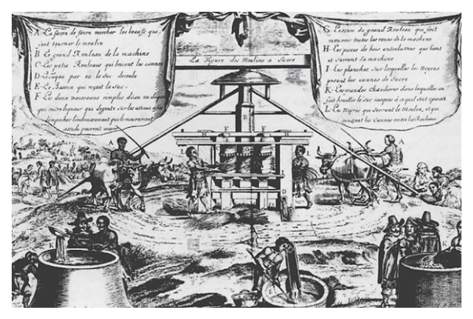
- （A）北非的阿爾及利亞
- （B）中美洲西印度群島
- （C）北美洲的紐芬蘭島
- （D）中部非洲剛果盆地
答案：（B）
詳解與考點
正解：題幹以十七世紀歐洲蔗糖生產圖探究歐洲與非、美交流，關鍵是當時供應歐洲蔗糖的種植園經濟。B：中美洲西印度群島的加勒比海種植園，使用非洲奴隸勞動大量生產蔗糖供應歐洲，故 B 為正解。
A：北非阿爾及利亞不是當時歐洲蔗糖的主要種植園產地。
C：紐芬蘭島以漁業著名，不是大型蔗糖種植園所在地。
D：剛果盆地不是十七世紀供應歐洲蔗糖的主要產區。
本題考點：大西洋三角貿易——加勒比海西印度群島以種植園和非洲奴隸勞動生產蔗糖供應歐洲；區域產業判讀——見近代蔗糖、歐洲與非美交流時，優先聯結西印度群島種植園。
第 11 題
清宣統三年十二月二十五日（1912 年 2 月 12 日），清帝溥儀頒布退位詔書。但在國立故宮博物院典藏的清代檔案中，發現一件進呈給溥儀的奏摺，時間標註為「宣統十六年七月」。我們應如何解釋這個現象？
- （A）宣統朝只有三年，應該是清政府官員誤植年代的奏摺
- （B）清帝雖退位，政府仍同意其繼續使用帝號和原有紀年
- （C）洪憲帝制時，為獲滿族支持而以宣統紀年進呈的奏摺
- （D）滿洲國成立，其政府官員上奏給溥儀，故以宣統紀年
答案：（B）
詳解與考點
正解：題幹的關鍵是清帝已於 1912 年退位，檔案卻仍標「宣統十六年」；判斷要回到退位後的優待安排。B：依《清室優待條件》，溥儀退位後仍保留帝號與宣統年號，舊臣仍可沿用原有紀年，因此出現「宣統十六年」的奏摺，故 B 為正解。
A：退位後仍可依優待條件沿用帝號與年號，不能僅因宣統朝原本只有三年便判定為誤植，A 錯誤。
C：洪憲是袁世凱稱帝時所用年號，並非宣統，C 錯誤。
D：滿洲國時期溥儀使用的年號是康德，不是宣統，D 錯誤。
本題考點：民初政治制度變遷——清帝退位後的《清室優待條件》保留其帝號與原有紀年；史料判讀——年代看似矛盾時，先核對當時制度安排與年號沿革，再判斷文獻脈絡。
第 12 題
金門有許多洋樓，建築上裝飾著象徵吉祥如意的鳳梨、祈求多子多孫的麥穗、象徵科舉及第的螃蟹（以「甲殼」比喻「科甲」）、表示時間的西洋時鐘或扛著屋簷的印度苦力（象徵屋主的社會地位）。這些建築裝飾反映以下何種歷史現象？
- （A）荷蘭人主導遠東貿易時期，當時盛行的建築風格也流傳至金門
- （B）鄭成功家族前往巴達維亞貿易，並將當地的建築特色帶回金門
- （C）民國早期，僑民從南洋帶回西方建築風格並融入金門傳統裝飾
- （D）日本占領金門時，其商人引進當時歐洲最流行的巴洛克式裝飾
答案：（C）
詳解與考點
正解：題幹的鳳梨、麥穗、螃蟹是傳統吉祥意象，西洋時鐘與印度苦力則帶有南洋及西方元素；中西並置正是金門僑民赴南洋謀生、返鄉建屋時帶回西方建築風格並融入在地傳統的痕跡。C 符合民國早期的僑鄉文化，故 C 為正解。
A：荷蘭人主導遠東貿易的時期與題幹所示僑民返鄉洋樓的形成背景不符，A 錯誤。
B：鄭成功家族前往巴達維亞貿易，無法解釋民國早期金門洋樓融合南洋與西方元素的現象，B 錯誤。
D：日軍雖曾於 1937 年至 1945 年間占領金門，但題幹所述洋樓是民國早期僑民返鄉興建、融合南洋與西方元素的建築成果，並非日本商人引進歐洲巴洛克裝飾風格的產物，D 錯誤。
本題考點：僑鄉文化——僑民移居海外後，會把居地的建築與生活元素帶回原鄉；史料判讀——同時出現傳統吉祥符號與南洋、西方意象時，優先連結近代僑匯與返鄉建築。
第 13 題
據統計，二次世界大戰期間德國平民死亡約 117 萬人，占該國 1939 年總人口 1.6%；蘇聯平民死亡約 1400 萬人，占該國 1939 年總人口 7.3%。蘇聯平民死亡人數與比率均遠多於德國的原因為何？
- （A）納粹黨在東歐多處設立大型滅絕營，用毒氣殺害當地人
- （B）蘇聯是主要戰場，戰火摧殘人命外，還有缺糧飢荒問題
- （C）德、義、日軸心國武器優越，超過蘇聯、英、美同盟國
- （D）為對付全球反共產勢力，大量的蘇聯士兵駐防東歐國家
答案：（B）
詳解與考點
正解：題幹比較二戰期間蘇聯與德國的平民死亡人數及比率，關鍵在戰場位置與戰爭造成的民生災難。東部戰線是二戰規模最大的地面戰場，長達四年的焦土戰、德軍對蘇聯佔領區的掠奪屠殺，以及缺糧飢荒，共同造成蘇聯平民大量死亡。B 符合，故 B 為正解。
A：納粹在東歐設立滅絕營確為史實，但主要針對猶太人等受迫害群體，不能解釋蘇聯平民死亡人數與比率遠高於德國的整體主因，A 錯誤。
C：武器優劣不是此一平民死亡差距的主要因果，且二戰戰局不能以軸心國武器全面優於同盟國概括，C 錯誤。
D：蘇聯士兵駐防東歐國家與二戰期間蘇聯平民死亡統計沒有直接因果關係，D 錯誤。它看起來對，是因為東歐確是冷戰時期的重要駐防區域，但題幹問的是二戰平民死亡原因。
本題考點：第二次世界大戰東部戰線——解釋平民傷亡須連結主要戰場、佔領暴行與飢荒等直接條件；歷史因果判準——選項須同時能說明傷亡規模與其集中於特定地區的原因。
第 14 題
圖3 為1500 年至1799 年間，從歐洲出發，前往亞洲海域貿易前三名國家的船隻數量變化圖。根據該圖，甲、乙、丙依序是哪些國家？
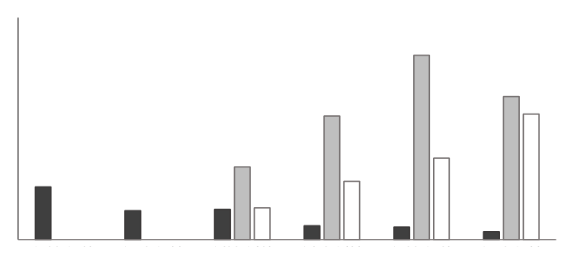
- （A）葡萄牙、荷蘭、英國
- （B）西班牙、英國、荷蘭
- （C）荷蘭、英國、西班牙
- （D）英國、葡萄牙、荷蘭
答案：（A）
詳解與考點
正解：辨識甲、乙、丙時，應把歐洲國家前往亞洲海域貿易的興起時序與圖中三條曲線對照。16 世紀率先開拓歐洲至亞洲海路的是葡萄牙；17 世紀荷蘭憑荷蘭東印度公司擴張亞洲貿易；英國則較晚擴大在亞洲的商貿勢力。因此甲、乙、丙依序為葡萄牙、荷蘭、英國，A 正確。
B：西班牙的海外活動重心主要在美洲，並經菲律賓參與亞洲貿易，不能取代葡萄牙作為最早大規模經營歐亞海路者；英國與荷蘭的興盛次序也顛倒。
C：荷蘭在葡萄牙之後才於亞洲海域崛起，不是三者中最早者；西班牙也不符合後期持續擴張的英國。
D：英國在亞洲海域大幅擴張的時間晚於葡萄牙與荷蘭，不能列為最早者；葡萄牙也不是 17 世紀取代其優勢的主要國家。
本題考點：近代海上貿易——以葡萄牙早期東來、荷蘭 17 世紀興盛、英國後起擴張的時序，對照圖表曲線的先後變化。
第 15 題
中國的百貨公司成立以來，多以「洋貨」為主打商品。民國初年，某一事件發生期間，上海一間百貨公司在報紙上刊登「敬告國人書」：「外交失敗，悲憤同深，……敝公司雖係統辦環球貨品，然宗旨首重國貨，歐美貨次之，其某國貨，則僅供市上之需求耳。」並表示某國貨品存貨出清，即不再販售。不過，抵制某國貨品的聲浪如排山倒海而來，該公司只好再度聲明：概將某國貨品「完全收束不賣，寧願犧牲血本，以示與眾共棄之決心。」請問「某一事件」指的是：
- （A）三一運動
- （B）五四運動
- （C）九一八事變
- （D）七七事變
答案：（B）
詳解與考點
正解：題幹「外交失敗」且引發大規模抵制某國貨，是巴黎和會山東問題交涉失敗所觸發的 1919 年五四運動。B：五四運動後民間掀起抵制日貨浪潮，上海百貨公司因而停售日貨，符合材料，故 B 為正解。
A：三一運動發生於朝鮮，並非中國因巴黎和會交涉失敗而發起的運動，A 錯誤。
C、D：九一八事變與七七事變的年代均晚於 1919 年，且不是由外交和會失敗引爆，C、D 錯誤。
本題考點：五四運動的背景與影響——見「巴黎和會山東問題交涉失敗」即連結 1919 年五四運動；抵制日貨判準——材料若呈現民眾因外交挫敗而要求停售日貨，即可判為五四運動相關的民族運動。
第 16 題
一份資料提到：1933 年的雙十國慶酒會選在臺北的鐵道旅館舉辦，出席的貴賓有美國、義大利駐臺領事及臺灣總督府高級長官。會場懸掛中華民國國旗，慶典中除演奏中華民國國歌外，還高呼「中華民國萬歲」。這段資料如何解讀最合理？
- （A）當時滿洲國成立不久，日本乃邀請滿洲國官員來臺舉辦慶祝雙十國慶活動
- （B）當時中日兩國的關係親密和善，臺灣總督府乃主動舉辦慶祝雙十國慶酒會
- （C）當時來臺的中國僑民日多，國府已在臺北設立領事館，故能舉辦國慶活動
- （D）當時的臺灣總督府正在進行皇民化政策，故舉辦雙十酒會來攏絡臺灣人民
答案：（C）
詳解與考點
正解：題幹的關鍵線索是 1933 年日治臺灣舉行雙十國慶酒會，會場懸掛中華民國國旗、演奏國歌並高呼「中華民國萬歲」。C：日治時期臺灣有中華民國駐臺領事館服務在臺中國僑民，因此中國僑民能舉辦雙十國慶活動，故 C 為正解。
A：滿洲國是日本扶植的偽政權，與中華民國雙十國慶活動無關，A 錯誤。
B：九一八事變後中日關係已惡化，且題幹未顯示酒會由臺灣總督府主動主辦，B 錯誤。
D：皇民化政策始於 1937 年，晚於 1933 年；以慶祝中華民國國慶攏絡臺灣人民也不合政策脈絡，D 錯誤。它看起來對，是因為資料中有總督府高級長官出席，但出席不等於總督府主辦或政策發動。
本題考點：日治臺灣的中國僑民社群——見中華民國國旗、國歌與雙十慶典，應連結在臺中國僑民及領事館；時序判準——將事件年份與政策起始年對照，1933 年早於 1937 年的皇民化。
第 17 題
某國的動力織布機技術在十九世紀初獨步全球，該國嚴格控管此關鍵技術，避免秘密外洩。一名外國技師刻意潛入該國工廠學習，花費六個月將所有技術細節記在腦中，回國後憑記憶建立相同的動力織布工廠，推動自己國家的工業技術革新。此情況最可能是：
- （A）他從英國偷學技術，帶回美國
- （B）他從英國偷學技術，帶回日本
- （C）他從美國偷學技術，帶回印度
- （D）他從美國偷學技術，帶回俄國
答案：（A）
詳解與考點
正解：題幹的「19 世紀初獨步全球」、「嚴格控管」與技師憑記憶返國設廠，指向英國紡織技術外流。A：Francis Cabot Lowell 在 1810 年代赴英國觀察動力織布技術，返美後建立紡織廠，推動美國工業化，故選 A。
B：日本引進西方紡織技術主要在明治維新後，時序不合。
C、D：題幹中的技術領先國是英國，不是美國，來源國即錯。
本題考點：工業革命技術擴散——先由時代與產業辨認當時的技術領先國英國，再用人物返國設廠的歷史事例判斷流向；時序判準——19 世紀初不能套用後來的明治維新情境。
第 18 題
表 4 為聯合國 2020 年發表的都市化資料，推估到 2030 年全球將有 60.4% 人口居住在都市地區。其中與歐、北美兩洲都市化程度相當的某洲，其經濟發展程度卻無歐、北美兩洲高。造成此現象的主要原因，最可能為下列何者？
表 4 都市化程度（%）| 區域 | 2000 年 | 2010 年 | 2020 年 | 2030 年（推估） |
|---|
| 全球 | 46.7 | 51.7 | 56.2 | 60.4 |
| 非洲 | 35 | 38.9 | 43.5 | 48.4 |
| 亞洲 | 37.5 | 44.8 | 51.1 | 56.7 |
| 歐洲 | 71.1 | 72.9 | 74.9 | 77.5 |
| 中南美洲 | 75.5 | 78.6 | 81.2 | 83.6 |
| 北美洲 | 79.1 | 80.8 | 82.6 | 84.7 |
- （A）人口數量為全球第一且全部集中在都市
- （B）都市皆主要生產農業加工品經濟價值低
- （C）都市的基礎設施健全吸引鄉村人口移居
- （D）鄉村生計艱困導致大量人口湧進大都市
答案：（D）
詳解與考點
正解：題幹指出某洲都市化程度接近歐、北美，經濟發展卻較低，這是過度都市化的典型現象。鄉村生計艱困形成推力，使人口大量湧入大都市而未必有相應工作與建設，D 正確。
A：人口數量全球第一且全部集中都市，既不合題表所示也不是造成過度都市化的主要原因，A 錯誤。
B：都市「皆」主要生產低價農業加工品的說法過度概括，不能解釋該現象，B 錯誤。
C：基礎設施健全所形成的是都市拉力較強的發展模式，不能說明高都市化而經濟發展較低的主因，C 錯誤。它看起來對，是因為都市人口確實會被設施吸引，但題幹要辨識的是鄉村推力主導的過度都市化。
本題考點：過度都市化——都市化率高不必然代表經濟發展高；推拉理論——鄉村生計惡化的推力可使人口快速集中於都市。
第 19 題
COVID-19 疫情爆發以後，許多國家積極研發與生產疫苗。2021 年，歐盟與美國、中國、印度、臺灣等已有疫苗生產廠，但大多實施出口管制，優先留給其公民施打；相較下，非洲地區目前疫苗嚴重不足，而非洲聯盟也計畫在 2040 年擴大疫苗生產到足敷非洲大陸 60%所需。COVID-19 疫苗生產的時空差異，最適合以下列哪個概念解釋？
- （A）時空收斂
- （B）區位移轉
- （C）擴散與反吸
- （D）核心與邊陲
答案：（D）
詳解與考點
正解：題幹對比疫苗生產集中於歐美、中國、印度、臺灣等地，這些地區優先供應本國；非洲則產能與疫苗不足，觸發「核心與邊陲」的全球分工概念。D：核心地區掌握較多技術與生產資源，邊陲地區依賴核心供應，正能解釋此一不平等格局，故 D 為正解。
A：時空收斂指交通、通訊進步使距離感縮短，不能解釋疫苗產能與取得權的差異；A 錯誤。
B：區位移轉指產業由一地遷往另一地；題幹是在比較既有生產能力的分布，未呈現遷移過程；B 錯誤。
C：擴散與反吸著重創新或人口、資本由中心向外擴散又回流的動態；本題重點是核心主導、邊陲依賴的結構差異；C 錯誤。它看起來對，是因為非洲聯盟計畫擴大生產，彷彿有技術擴散，但題幹主要呈現的是當時資源分配不均。
本題考點：核心與邊陲——比較地區間資源、技術與生產能力；當核心掌握高附加價值資源且邊陲供應不足、形成依賴，即以核心與邊陲解釋。
第 20 題
某小組在進行地理問題探究學習時，蒐集到 1960、1980、2000 和 2020 等 4 年臺東地區工商消費電話簿，電話簿載有各行業營業場所的地址和電話號碼。該學習小組探究的主題最可能是下列何者？
- （A）臺東市都市機能結構變遷
- （B）臺東市都市住宅用地擴張
- （C）臺東市土地競租曲線消長
- （D）臺東地區都市成長的歷程
答案：（A）
詳解與考點
正解：題幹資料是4個年份的工商消費電話簿，記錄各行業營業場所的地址與電話；關鍵是可由不同行業的空間分布，追蹤都市服務機能的變化。A：比較1960、1980、2000、2020年各行業營業地址，可分析臺東市都市機能結構變遷，故 A 為正解。
B：都市住宅用地擴張須有地籍圖、土地利用圖或建成區資料，工商電話簿不能直接呈現住宅用地範圍，B 錯誤。
C：土地競租曲線消長須比較地價、租金或地租資料，電話簿只有營業地址，C 錯誤。
D：都市成長歷程通常著重人口、建成區面積或行政區發展資料；它看起來對，是因為資料跨越多個年份，但電話簿最直接能分析的是行業與商業機能分布，D 錯誤。
本題考點：地理資料判讀——工商電話簿的行業與地址資料，可用於比較都市機能的空間分布及其變遷；研究住宅擴張、地租或都市規模時，須改用土地利用、地價或人口資料。
第 21 題
公平貿易指的是在農產品的產銷過程中，確保生產者獲得公平的報酬、勞動者獲得應有的保障、環境可以得到保護的一種制度。圖 4 為參與公平貿易生產商的分布，這些生產商的分布區，具有哪些共同的時空背景？圖4
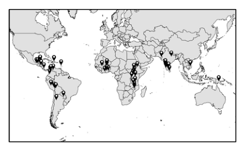
- （A）多位於熱帶沙漠區，八至九世紀時曾為阿拉伯帝國的勢力範圍
- （B）多位於熱帶季風區，十至十三世紀曾為東亞人群外流的移入地
- （C）多位於熱帶氣候區，二十世紀中期以前曾先後遭歐洲列強殖民
- （D）多位於信風帶，二十世紀後期冷戰期間曾為美蘇競爭的緩衝區
答案：（C）
詳解與考點
正解：本題須依圖4跨區比較公平貿易生產商所在地，關鍵是其分布多落在熱帶地區，且在二十世紀中期以前多曾受歐洲列強殖民。C 同時符合圖示所要求的氣候與歷史背景，也能連結殖民經濟下初級農產品外銷依賴，故 C 為正解。
A：熱帶沙漠與八至九世紀阿拉伯帝國勢力範圍，不能涵蓋圖中各分布區，A 錯誤。
B：熱帶季風與東亞人群外流移入地，也不是各分布區共同的時空背景，B 錯誤。
D：信風帶及冷戰緩衝區同樣不能涵蓋圖中全部分布，D 錯誤。它看起來對，是因為部分地區可能位於信風帶或曾受冷戰影響，但題目問的是各分布區的共同背景。
本題考點：世界區域分布判讀——先依圖示確認可共同涵蓋各分布區的氣候帶，再以殖民史檢驗歷史條件；公平貿易與初級農產——作答須比較跨區共通性，不能以單一地區特徵概括全圖。
第 22 題
據統計，2020 年澳大利亞農業缺工嚴重，導致部分農產品無人收成、處理，以致許多農產品價格高漲。形成此現象的原因之一，為澳大利亞因應 COVID-19 疫情而進行邊境管制，使過去占農場勞力來源高達八成的國外背包打工客，在 2020 年來澳的人數大減。若僅針對上述澳大利亞的農業發展、農產價格與背包打工客的關係，擬定相關的全球化議題進行探究，下列哪個議題最為適合？
- （A）全球化與區域結盟
- （B）全球化與交通革新
- （C）全球化與多元文化
- （D）全球化的貢獻與挑戰
答案：（D）
詳解與考點
正解：題幹聚焦國際背包客供應澳大利亞農業勞力，邊境管制使跨國勞動力中斷，進而造成缺工與農產品價格上漲；這呈現全球化的效益與風險。D：全球化的貢獻與挑戰最能整合跨國勞動流動、疫情管制與農產價格的連鎖關係，故 D 為正解。
A：區域結盟著重國家或區域間的政治、經濟合作，非農場依賴外籍勞力的核心問題。
B：交通革新不是題幹所述缺工與價格上漲的直接原因。
C：多元文化關注不同文化群體的互動，未能解釋勞動力中斷對農業供應的衝擊。
本題考點：全球化的貢獻與挑戰——跨國勞動移動可補足勞力需求，但邊境受限時也可能暴露供應鏈脆弱性；議題對應判準——以題幹的主要因果鏈選題，不以周邊現象代替核心問題。
第 23 題
依據題文資訊，政府改善長照制度所欲達成的最重要政策目標為何？
- （A）保障勞動參與：增加長照勞力供給以保障勞工的就業機會
- （B）提倡兩性平權：確保家庭照護之責任由子女共同平均分擔
- （C）促進社會安全：因應人口結構變遷以保障人民生活的尊嚴
- （D）促進經濟平等：藉社會福利制度達成財富與資源重新分配
答案：（C）
詳解與考點
正解：題幹以人口老化、家屬照顧負擔及日間照顧、看護人力、證照、補助等措施為線索，所要處理的是高齡者的照顧與尊嚴生活保障。這屬於社會安全制度因應人口結構變遷的核心目標，C 正確。
A：增加照顧人力可兼有就業效果，但不是題幹各項長照措施最重要的政策目標。
B：題幹未以要求子女平均分擔照顧責任作為政策手段，不能推論其主旨為兩性平權。
D：補助具有資源移轉效果，但整體措施重點在長照保障，不是以財富重分配為主要目的。
本題考點：社會安全——面對高齡化與失能照顧需求，政府以長期照顧服務保障基本生活尊嚴；判讀政策目標時，應從整體問題與措施功能判斷，不以單一措施的附帶效果取代主旨。
第 24 題
依據題文資訊，政府實際執行（甲）與（丁）政策對當年的計算與直接影 GDP 響為何？
- （A）甲政策計入政府支出，不影響GDP
- （B）甲政策計入政府移轉性支付，將增加GDP
- （C）丁政策計入政府支出，將增加GDP
- （D）丁政策計入政府移轉性支付，不影響GDP
答案：（D）
詳解與考點
正解：題幹區分政府實際購買服務與直接補助家庭，判斷關鍵是 GDP 只計入當期新生產的最終財貨與勞務。D：丁為直接補助需要長照的家庭，屬政府財政上的移轉性支付，不代表政府當期購買新增服務，因此不計入 GDP，故 D 為正解。
A：甲廣設日間照顧中心涉及政府實際購買或提供服務，屬 GDP 支出法中的政府購買並增加 GDP，不是不影響 GDP，A 錯誤。
B：甲不是移轉性支付，而是政府實際購買服務；其服務產出會增加 GDP，B 錯誤。
C：丁是政府財政上的移轉性支付，但不屬 GDP 支出法中的政府購買；未對應當期新生產，因此不計入 GDP，C 錯誤。它看起來對，是因為政府確實支出款項，但 GDP 判斷的是當期生產，不是所有現金支出。
本題考點：GDP 支出法——政府實際購買最終財貨與勞務才計入政府支出 G；移轉性支付判準——直接補助、津貼等只是所得移轉，未對應當期新增生產，不直接計入 GDP。
第 25 題
依據題文資訊，政府改善長照制度的政策作為，何者最適合由政府委託民間執行？
- （A）甲
- （B）乙
- （C）丙
- （D）丁
答案：（A）
詳解與考點
正解：題幹問最適合「政府委託民間執行」的政策，判準是服務可由社福專業機構提供，且不涉及核心公權力。A：廣設日間照顧中心屬社會服務，可由 NPO 或社福機構以專業與規模經濟執行，適合政府委託民間辦理。
B：外國籍家庭看護工引進涉及移民、勞動與跨國管理政策，屬政府應負責的管制與制度規劃。
C：建立全國長照人員證照制度涉及資格認定與公權力行使，不宜委外決定。
D：直接補助須由政府審核資格、核定與監督款項，不宜將核心決定權委外。
本題考點：政府委外——適合委外的是可由民間專業提供的公共服務；公權力判準——資格認定、證照與補助核定等涉及權利義務的決定，應由政府負最終責任。
第 26 題
該同學如要去考察最靠近樟腦和茶葉產地的地點，下列何地最適合？
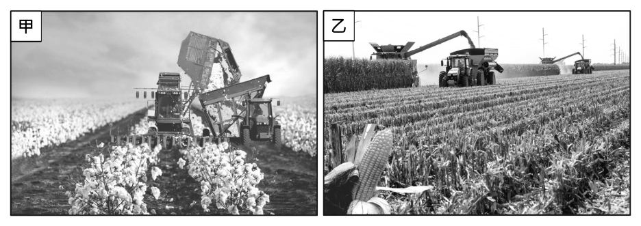
- （A）基隆（雞籠）
- （B）萬華（艋舺）
- （C）淡水（滬尾）
- （D）大溪（大嵙崁）
答案：（D）
詳解與考點
正解：史料說樟腦、茶葉「惟淡北內港始有之」，又指出茄藤、通草多出於內山，題目要找最靠近內山產地之處。D：大嵙崁即今大溪，位於淡北內港及鄰近丘陵山地，最接近樟腦、茶葉的產地。
A：基隆是北部港口，並非題幹所指的淡北內港產地。
B：萬華即艋舺，為河口商港，主要是貨物流通地，不是最接近內山產地之處。
C：淡水即滬尾，為出海口與港口，距內山產地較遠。
本題考點：清代北臺灣產銷地理——內山出產樟腦、茶葉等山產，港口負責裝運與貿易；史料定位——區分產地、內港與出海口，不能把貨物集散港誤認為生產地。
第 27 題
上述史料最適合作為下列哪項推論的佐證？
- （A）外國洋行已在臺灣設立並發展
- （B）漢人和原住民族貿易相當熱絡
- （C）農業和農產加工技術已很成熟
- （D）兩岸物產可互補形成生產分工
答案：（D）
詳解與考點
正解：史料的關鍵是「將樟腦、茶葉運至漳、泉、福州、寧波、上海等處出售，再購買日用必需品載回」，直接呈現臺灣輸出物產、對岸輸入日用品的交換關係。D：兩岸以不同物產互通有無，形成物產互補與生產分工，最能由史料佐證，故 D 為正解。
A：史料只寫商人以船運輸臺灣物產，沒有外國洋行在臺灣設立或發展的資訊，A 錯誤。
B：史料提到茄藤、通草多出於內山，卻未記載漢人與原住民族之間的交易情形，不能推論貿易熱絡，B 錯誤。
C：油、米、糖等物產的輸出可證明農產豐富，不能直接證明農業與農產加工技術「已很成熟」，C 錯誤。
本題考點：史料證據判讀——先將史料中的貨物流向對回選項主張；貿易分工判準——一地輸出其特產、再輸入另一地日用品，可推論物產互補；推論限度——史料未明示的洋行、族群交易或技術程度，不能逕行補入。
第 28 題
圖5是歐洲行政區域簡圖。若僅考慮作物生長與氣溫的關係，2010年代中期甲作物在歐洲的主要產區，最可能為下列何者？卯
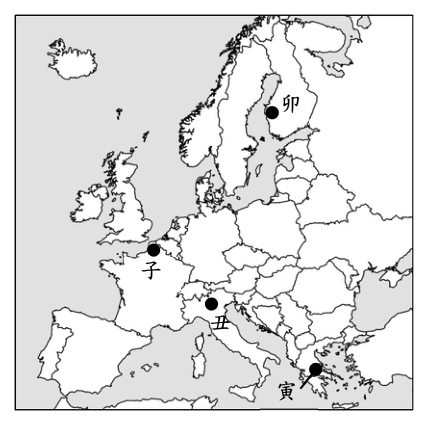
- （A）子
- （B）丑
- （C）寅
- （D）卯子丑寅圖5
答案：（C）
詳解與考點
正解：題幹給定甲作物播種期氣溫須在 15°C 以上，生長期還要穩定升至 20°C-30°C，應以熱量條件判斷其為喜溫作物，如玉米。圖 5 的寅位於緯度較南、夏季氣溫較高的南歐，最符合甲作物的生長需求；寅對應 C，故 C 為正解。
A：子的位置較北，夏季熱量條件較不足，較不符合甲作物需穩定 20°C-30°C 的條件，A 錯誤。
B：丑的位置亦偏北，生長季的高溫條件不如南歐穩定，B 錯誤。
D：卯的位置較冷，夏季氣溫較難充分滿足喜溫作物的需求，D 錯誤。
本題考點：作物分布與氣候——先將播種溫度與生長溫度轉為作物的熱量需求；區位判準——需高溫且生長期溫度上升的喜溫作物，優先選緯度較低、夏季較暖的地區。
第 29 題
透過甲、乙兩張照片推論這兩個農業生產活動，最可能具有下列哪項共同的經營特色？
- （A）自然投入重灌溉，人為投入重視生物科技
- （B）在農場旁設立工廠，進行農產品初級加工
- （C）採取專業化耕作，呈現規模經濟經營型態
- （D）作物送往畜牧場，形成農牧產業連鎖關係
答案：（C）
詳解與考點
正解：照片中的甲為棉花、乙為蔬菜或穀物，皆呈現大型機具收成、單一作物連片栽培；關鍵在於由景觀判讀農業經營型態，而非延伸推測未出現的產業環節。C：專業化耕作配合大面積栽培與機械化，可形成規模經濟，最符合兩者共同特色，故 C 為正解。
A：灌溉與生物科技屬投入方式，照片未提供水利設施或生技應用的線索，A 錯誤。
B：農場旁設立工廠進行初級加工，須有加工設施或加工流程的資料；照片只呈現收成，B 錯誤。
D：作物送往畜牧場形成農牧產業連鎖，照片未顯示畜牧活動或運輸關係，D 錯誤。它看起來對，是因為農業確可能與畜牧業連結，但題目要求的是兩張照片可直接推論的共同特徵。
本題考點：農業景觀判讀——大型機具、連片單一作物與機械化收成，判為專業化經營及規模經濟；照片題只能依可見線索推論，不可補入未呈現的加工或農牧鏈。
第 30 題
若要觀看東北方向的低處景觀，圖 6 中哪個觀景台的視野最開闊？
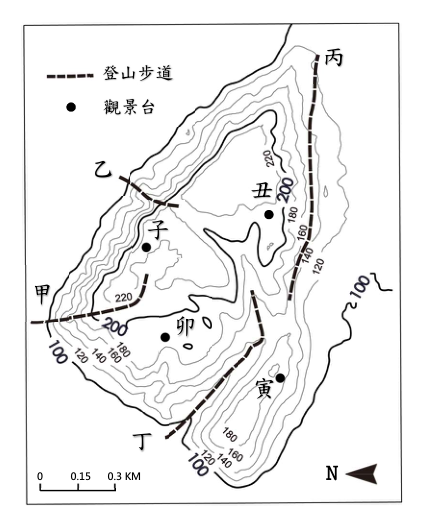
- （A）子
- （B）丑
- （C）寅
- （D）卯
答案：（A）
詳解與考點
正解：本題有一個關鍵前提——圖 6 的指北箭頭指向圖幅左方，地圖是旋轉方位（圖幅上方不是北方），判讀前須先校正：東北方向對應圖幅的左上方。視野開闊須同時滿足三條件——觀景台位置夠高、朝目標方向為連續下降的開闊坡面、沿線無更高地形遮擋。子觀景台位居約 220 公尺等高線圍成的高地上，朝東北（圖幅左上）一側等高線連續向外遞減、逐漸疏開，一路降至圖緣約 100 公尺的低地，中間沒有更高的山體阻擋，最能俯瞰東北方低處景觀，故選 A。
B：丑觀景台雖也在約 200 公尺的高處，但其東北方（圖幅左上）隔著中央窪地正對子所在約 220 公尺的更高稜線，視線被擋住，看不遠。
C：寅觀景台本身高程較低（約 180 公尺），東北方向又隔著卯所在約 220 公尺的高地與中央山體，低處景觀被大片較高地形遮蔽。
D：卯觀景台朝東北方向面對子所在高地的較高坡面，視線被鄰近更高地形包夾侷限，無法開闊眺望東北低處。
本題考點：等高線地形圖的視野（通視）判讀與地圖方位校正——先依指北箭頭確定真實方位（本圖北方在圖幅左方，為命題陷阱），再綜合觀測點高程、目標方向坡面是否連續下降、沿線有無更高地形（山脊）遮蔽來判斷可視範圍。
第 31 題
圖 6 中哪條登山步道，最可能是沿著谷地設置？
- （A）甲
- （B）乙
- （C）丙
- （D）丁
答案：（D）
詳解與考點
正解：谷地的判準是等高線呈 Ｖ 形凸向高處（上游）的線形低地，沿谷步道會走在兩側地勢較高的凹地中。依圖 6，丁步道自圖幅下緣起，沿著卯所在約 220 公尺高地與寅所在約 180 公尺高地之間的線形低地向內延伸，該段等高線明顯朝高處彎曲、步道兩側皆為較高山坡，是四條步道中唯一沿谷線設置者，故選 D。
A：甲步道自圖幅左緣低處直接橫越多條等高線爬上坡面，沿線等高線未呈凸向高處的 Ｖ 形，屬橫切山坡的爬坡路線，非沿谷地。
B：乙步道跨越子所在高地外緣的稜線鞍部，行經處等高線凸向低處（稜）或為兩高點間的鞍部，與谷地的凹地形態相反。
C：丙步道沿丑所在高地外側的稜脊延伸下行，行經處等高線同樣凸向低處，為稜線（分水線）步道，不是谷地（集水線）。
本題考點：等高線地形圖的稜谷判讀——等高線凸向高處者為谷（集水線）、凸向低處者為稜（分水線）；沿谷步道即走在等高線 Ｖ 形指向上游的線形低地中。
第 32 題
石滬最可能出現在下列哪種海岸地形上？
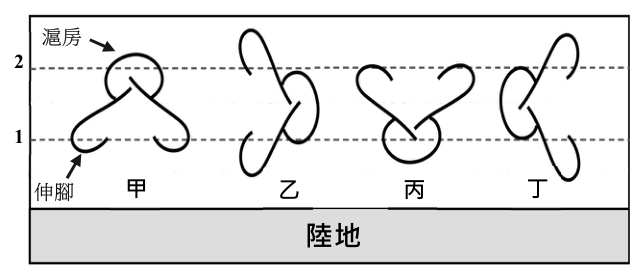
- （A）潟湖
- （B）沙嘴
- （C）海階
- （D）海蝕平台
答案：（D）
詳解與考點
正解：題幹指出石滬建在高低潮間的平坦地區，且要就近取得石塊堆築；海蝕平台地勢平坦、基岩裸露，最符合條件。D 為正解。
A：潟湖位於沙洲或沙嘴內側，主要是受遮蔽的水域，不是以岩石平臺為特徵。
B：沙嘴是砂質沉積地形，石塊來源不足，也不利堆築石滬。
C：海階是地殼抬升後的古海蝕平台，通常高出現今潮間帶，無法利用潮汐困魚。
本題考點：海岸地形與人地互動——石滬需同時具備潮間帶、平坦基岩面與石材來源；現今海蝕平台符合，抬升的海階則不符合潮汐條件。
第 33 題
依據石滬捕魚的原理，漁民為獲取最大漁獲量，設置石滬時最可能採取圖 7 中哪種開口方向？滬房 2 水深 (m) 1 伸腳甲 ㇠ 丙丁陸地圖7
- （A）甲
- （B）乙
- （C）丙
- （D）丁
答案：（A）
詳解與考點
正解：石滬利用漲潮時魚群隨海水進入、退潮時受石堤阻擋而留在滬房，關鍵是依水深、陸地、伸腳與滬房的相對位置判斷有效開口。官方答案為 A；但本筆未保留圖7的完整配置，只能確認 A 對應甲，不能由現有文字判定甲的實際朝向。
B：B 對應乙；圖7缺漏，無法核對乙與水深、陸地及滬房的相對位置。
C：C 對應丙；圖7缺漏，無法核對丙的開口方向。
D：D 對應丁；圖7缺漏，無法核對丁的開口方向。
本題考點：石滬捕魚原理——漲潮時魚群進入石滬，退潮時魚群受石堤阻擋而集中於滬房；圖形判讀時須以完整圖中的水深、陸地、伸腳與滬房位置共同判斷。
第 34 題
該官僚在日記中的論述，最適合作為該地區當時下列哪項事實的佐證？
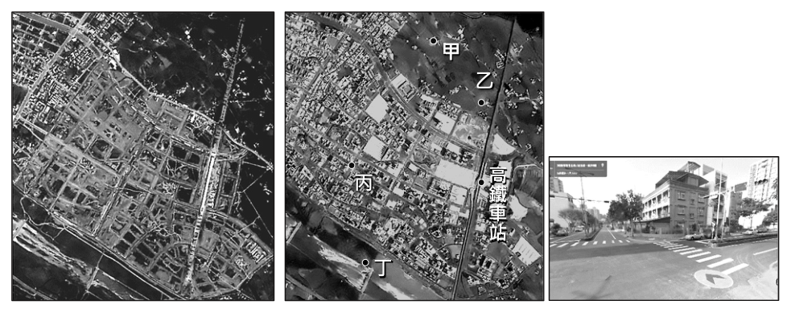
- （A）超過環境負載力上限
- （B）區域互賴已超過限度
- （C）原住居民已遷徙他鄉
- （D）產業分工已發展成熟
答案：（A）
詳解與考點
正解：題幹描述山坡、河中沙洲、平地乃至偏遠原始林皆被開墾，樹木砍伐殆盡，且官僚將亂世歸因於人口過多；這些條件指向人口與資源利用已超出環境可持續承受的限度。A：最適合作為該地超過環境負載力上限的佐證，故 A 為正解。
B：區域互賴是地區間因分工、運輸或交換形成的關係，題文未談及，B 錯誤。
C：題文未提供原住居民遷徙的資料，C 錯誤。
D：產業分工成熟須有不同地區或產業專業化的證據，土地過度開發不能直接證明，D 錯誤。
本題考點：環境負載力——當人口需求與開發範圍使土地、森林等資源過度利用，即可能超過環境可持續承載上限；史料判讀——先抓取資源耗竭與全面開墾等具體證據，再對應概念。
第 35 題
由該官僚主張的減緩人口成長策略判斷，其所處的時代，經濟活動最可能有何特徵？
- （A）資源採集需要族群密切合作
- （B）貿易活動需要精確計算能力
- （C）農業生產需要大量體力勞動
- （D）城市對鄰近鄉村依賴程度低
答案：（C）
詳解與考點
正解：題幹中山坡、沙洲與原始林都已開墾，官僚又將人口過多視為亂世根源，反映當時農業擴張高度需要人力投入耕作。C：農業社會的生產多仰賴人力與體力，人口常被視為維持耕種的重要條件，故 C 正確。
A：資源採集型社會為取得獵物、採集物而重視族群合作，不能由題幹的墾殖與人口壓力推出。
B：貿易活動的精確計算能力，屬商業發展的特徵，非此處農地大量開發與勞力需求的核心。
D：農業社會的城市通常仰賴鄰近鄉村供應糧食與原料，城市對鄉村的依賴程度不會低。它看起來對，是因為題幹提到開發與人口增加，容易誤以為城市經濟已能脫離農村。
本題考點：農業社會的人口與生產——當經濟以耕作為主且土地持續開墾時，農業生產通常需要大量體力勞動；城鄉依賴判準——城市的糧食、原料主要來自鄉村，即表示城市對鄉村依賴高。
第 36 題
照片 2 最可能位於圖 9 中何處？
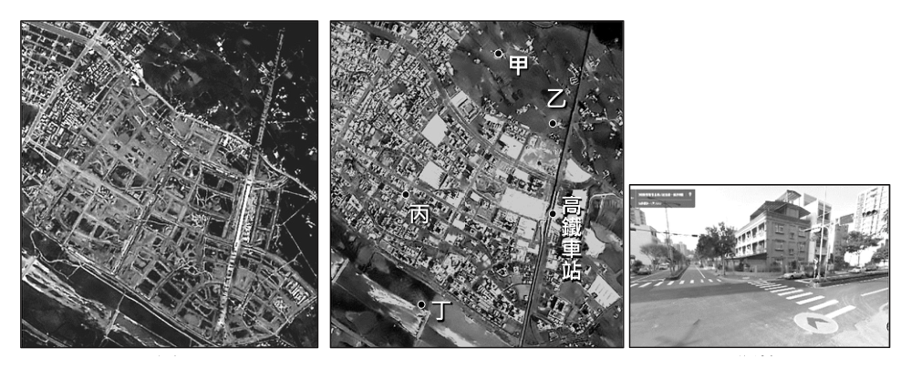
- （A）甲
- （B）乙
- （C）丙
- （D）丁
答案：（C）
詳解與考點
正解：題幹要把照片 2 的實景位置對應到圖 9，關鍵是比對道路交會型態、街廓密度、建物分布與周邊地貌。C：依照片 2 與圖 9 的位置對照，丙最符合，故 C 為正解。
A、B、D：甲、乙、丁與照片 2 的道路、街廓、建物及地貌組合不符，不能只憑單一景物判定位置。
本題考點：實景與圖像對照——同時比對道路交會型態、街廓密度、建物分布與周邊地貌；位置判準——多項空間特徵均能對應，才是最可能的位置。
第 37 題
依據圖8、圖9 影像資訊的差異，下列對於該地區的推論，哪項最為合理？
- （A）中心商業區進行市地重劃
- （B）農地多轉為發展休閒農業
- （C）河川曾因洪患災害而改道
- （D）鐵道建設早於此區的發展
答案：（D）
詳解與考點
正解：兩期衛星影像中的筆直鐵道線已存在，而市區街廓後來沿鐵道方向延展，應以建設與周邊開發的先後判讀。D：鐵道建設早於此區發展，最符合影像差異，故 D 為正解。
A：中心商業區市地重劃應有明確街廓重整證據，題圖資訊不足以支持。
B：農地轉為休閒農業不會由沿鐵道形成的市區街廓直接推得。
C：河川改道應呈現河道位置改變或洪患痕跡，影像差異無此證據。
本題考點：遙測影像判讀——比較不同年份影像時，辨識先已存在的線性設施與後續新增街廓；發展時序判準——市區沿既有鐵道擴張，表示鐵道通常先於周邊都市開發。
第 38 題
若僅依照《戒嚴令》第二條規定的內容，下列哪兩地的交通航線仍有機會從事貨物運輸的往來？
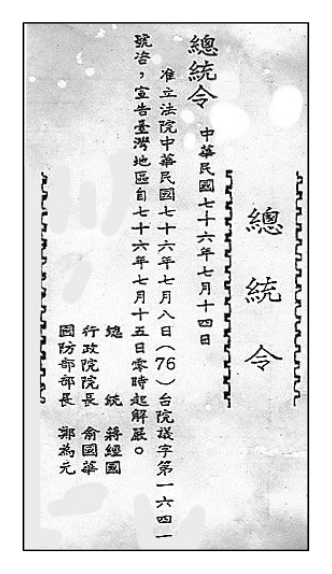
- （A）蘇澳－安平
- （B）新竹－廈門
- （C）臺中－香港
- （D）花蓮－東京
答案：（A）
詳解與考點
正解：題幹限定「僅依照《戒嚴令》第二條」，關鍵規定是基隆、高雄、馬公三港仍開放，並另規定省內海上交通航線，其餘各港一律封鎖。A：蘇澳與安平皆在臺灣本島，屬省內海上交通航線，仍有機會從事貨物運輸往來，故 A 為正解。
B：新竹至廈門涉及島外港口，非省內海上交通航線，依題幹規定無法通行，B 錯誤。
C：臺中至香港涉及島外港口，依題幹規定無法通行，C 錯誤。
D：花蓮至東京涉及島外港口，依題幹規定無法通行，D 錯誤。
本題考點：史料限定條件判讀——作答時先鎖定「僅依第二條」及「省內海上交通航線」兩項條件；港口航線判準——兩端皆在臺灣省內才可能通行，連往島外港口即不符。
第 39 題
《戒嚴令》第二條規定最主要的目的應是：
- （A）禁止臺灣生產的米、糖外銷，以免發生糧荒
- （B）切斷臺灣與前殖民母國日本之間的政治聯繫
- （C）管制大陸地區軍民撤離來臺以穩定臺灣政情
- （D）與美國共同協議以便執行圍堵共產主義政策
答案：（C）
詳解與考點
正解：第二條封鎖多數港口並嚴禁出入，須放回民國 38 年國共內戰末期的大量軍民來臺背景理解。C：港口管制可限制人員與物資流動，目的在管制大陸地區軍民撤離來臺並穩定臺灣政情。
A：條文重點是港口出入管制，不是禁止米、糖外銷以避免糧荒。
B：當時主要的政治與軍事情勢是國共內戰，封港目的不是切斷與日本的政治聯繫。
D：美國圍堵共產主義雖是冷戰脈絡之一，但條文的直接措施是管制港口，不能據此判定為與美國共同協議。
本題考點：史料情境判讀——先抓取條文中的具體措施，再連結施行時的政治軍事情勢；戒嚴初期港口管制——封鎖與嚴禁出入的直接功能是控制人員、物資流動與維持政局。
第 40 題
《戒嚴令》第四條的規定，因為下列哪項理由而「違反」法治國家應遵循的法律原則？
- （A）國家禁止的行為與防止擾亂治安無關
- （B）國家對於違反行為不分輕重均判死刑
- （C）國家只限制部分違法行為而違反平等
- （D）國家以法規範事後溯及既往處罰人民
答案：（B）
詳解與考點
正解：第四條把造謠、搶奪、鼓動學潮、持有槍彈等性質與危害程度不同的行為，一律處死刑；關鍵違反的是罪責與刑罰應相當的比例原則，故 B 為正解。
A：列舉行為多與維護治安有關，不能據此說國家禁止行為與防治安無關，錯誤。
C：法律只規範部分違法行為本身，不等於違反平等原則，錯誤。
D：題文未說法規制定後回溯處罰先前行為，不能判為溯及既往，錯誤。
本題考點：法治國原則——刑罰須與行為的責任及危害相當；法律判讀——判斷是否違反原則，必須以題文實際提供的規範內容為據，不可補入未提的溯及既往事實。
第 41 題
圖 10 的解除《戒嚴令》公告，同時有 3 人署名，可用以佐證我國憲政體制的何種特徵？
- （A）總統為三軍統帥且國防部為行政院各部會之首
- （B）總統發布命令皆須行政院長與國防部長之副署
- （C）行政院長與國防部長皆須遵循總統的命令行事
- （D）總統和行政院的關係及運作含有內閣制的精神
答案：（D）
詳解與考點
正解：題幹指出解除《戒嚴令》的總統令有總統、行政院長與國防部長 3 人共同署名，關鍵是命令須由相關行政首長副署並由行政院負責，呈現我國憲政運作中的內閣制精神。D 說總統和行政院的關係及運作含有內閣制的精神，最能說明副署制所代表的權責關係，故 D 為正解。
A：總統為三軍統帥不等於國防部為行政院各部會之首，且共同署名無法佐證後半敘述，A 錯誤。
B：副署制不是指總統發布的所有命令都固定由行政院長與國防部長副署；副署者應依命令事項由相關首長負責，B 錯誤。
C：行政院長與國防部長並非只是遵循總統命令的下屬，副署正反映行政首長應負政治責任，C 錯誤。它看起來對，是因為總統在國防事務具有重要職權，但副署制的重點是行政責任，不是單向命令關係。
本題考點：副署制——總統命令由行政院長或相關部會首長副署，使行政首長就事項負責；內閣制精神——行政權運作須有行政院的參與與責任，不可化約為總統對部會的單向指揮。
第 42 題
依據題文所述的協作平台特性，對電子地圖市場的經濟效率最可能產生下列何種影響？
- （A）免費查詢地圖資訊可降低外部成本，提升經濟效率
- （B）自由編輯地圖可滿足更多市場需求，提升經濟效率
- （C）開放式地圖只有滿足特定群體需求，減少經濟效率
- （D）免費的圖資降低電子地圖市場價值，減少經濟效率
答案：（B）
詳解與考點
正解：題幹的「所有人使用及編輯」與救災、飲水機等例子，指出開放協作可補足商用地圖未涵蓋的需求，觸發市場需求滿足與經濟效率的判斷。B：自由編輯使小眾、在地需求也能被納入圖資，滿足更多市場需求，提升經濟效率，故 B 為正解。
A：免費查詢降低的是使用者的取得成本，不能據此判定降低外部成本；外部成本是市場行為加諸第三人的成本，兩者不同。
C：題文正說明平台可服務主流之外的多種需求，不是「只有」特定群體受益，C 錯誤。
D：免費圖資擴大使用與編輯的可能性，不等於降低市場價值；它看起來對，是因為把免費誤認為沒有經濟價值。
本題考點：市場效率與需求滿足——能補足既有市場未供應的需求，通常提升資源配置效率；外部成本判準——須是交易對第三人造成而未反映在價格中的成本，不能與免費或低價混同。
第 43 題
由於開放式電子地圖協作平台允許使用者新增屬性及空間資料，下列何者最可能是由民眾透過上述協作平台產出的空間資料及可運用的服務？
- （A）中央氣象局製作的地面天氣圖，可觀測各地的沙塵暴
- （B）社群自行建置登山步道地圖，可即時查詢及記錄路徑
- （C）查詢由政府委製的公車APP即時資訊，減少候車時間
- （D）鐵路局製作女性專用車廂車次表，提高女性乘車意願
答案：（B）
詳解與考點
正解：題幹的「民眾透過協作平台產出」要求辨識圖資是否由使用者共同編輯。B：社群自行建置登山步道地圖，並可即時查詢、記錄路徑，符合開放式協作地圖由民眾集體產製空間資料的特性，故 B 為正解。
A：地面天氣圖由中央氣象局製作，屬官方機構產製，非民眾協作。
C：公車即時資訊由政府委製，雖便利使用者，圖資並非由民眾共同編輯。它看起來對，是因為同樣提供即時位置資訊，卻不符合協作平台的產製來源。
D：女性專用車廂車次表由鐵路局製作，屬官方服務。
本題考點：開放式協作地圖——先辨識資料的產製者；由使用者可共同新增、編輯並分享的圖資，才符合協作平台，官方或企業單向提供的便民資訊不屬此類。
第 44 題
當時鄂圖曼帝國面臨的危機為何？
- （A）帝國多次進攻基督教大城維也納未果，伊斯蘭勢力擴張失敗
- （B）新帝國主義者覬覦近東地理區位與資源，使得國土深受威脅
- （C）世界大戰爆發，帝國加入德、奧匈帝國陣營，戰後國勢衰弱
- （D）軍人凱末爾推動西化政策，引起保守者反抗，國內政局不安
答案：（B）
詳解與考點
正解：題幹定位在 19 世紀後期，並明說伊斯蘭世界受西方列強勢力入侵、鄂圖曼帝國無法保護其領域；應以新帝國主義擴張判斷危機。B：近東的地理區位與資源受列強覬覦，國土因而深受威脅，與題文時代及處境相符，故 B 為正解。
A：鄂圖曼帝國圍攻維也納屬 17 世紀的事件，早於題幹所述的 19 世紀後期，A 錯誤。
C：第一次世界大戰及帝國加入德、奧匈陣營發生於 20 世紀初，非此時的主要危機，C 錯誤。它看起來對，是因為同樣涉及鄂圖曼帝國衰弱，但時序已晚於題幹。
D：凱末爾推動西化在鄂圖曼帝國瓦解後，不能用來說明 19 世紀後期帝國面臨的危機，D 錯誤。
本題考點：近代帝國主義——19 世紀後期列強為市場、資源與戰略區位競逐海外，近東的鄂圖曼帝國因而受威脅；歷史時序判準——選項事件須先與題幹時段對照，早於或晚於 19 世紀後期者均不能作答。
第 45 題
依據題文資訊，下列有關該思想家主張的敘述，何者最能凸顯「泛伊斯蘭主義」的社會規範功能？
- （A）對抗西方諸列強入侵的武力團結主義
- （B）避免伊斯蘭世界分裂的國家民族主義
- （C）重建伊斯蘭文化共同價值與集體信念
- （D）教育穆斯林信徒遵守伊斯蘭宗教儀式
答案：（C）
詳解與考點
正解：題幹指定「社會規範功能」，且題文強調以伊斯蘭基本信仰作為普遍生活倫理規範來團結各方。C：重建伊斯蘭文化共同價值與集體信念，正是規範群體行為與凝聚認同的功能。
A：武力團結是政治或軍事動員。
B：國家民族主義不是泛伊斯蘭主義的核心。
D：教育信徒遵守宗教儀式只限教條實踐，未呈現共同生活倫理與社會整合。A、B、D 看起來都與團結或宗教有關，但題幹要的是共同價值如何成為社會規範。
本題考點：社會規範功能——共同價值與集體信念可提供行為準則並維繫群體整合；概念區分——軍事動員、民族主義與儀式遵循，不等同以普遍倫理建立社會規範。
第 46 題
該思想家的出生地被納入伊斯蘭世界的一部分，最可能是透過下列哪種文化擴散過程？
- （A）從尼羅河流域向西越過撒哈拉沙漠擴散而來
- （B）從尼羅河流域向北越過地中海海域擴散而來
- （C）從阿拉伯半島向東南經過南洋群島擴散而來
- （D）從阿拉伯半島向東北經過伊朗高原擴散而來
答案：（D）
詳解與考點
正解：題幹明示思想家出生於阿富汗，關鍵是追溯伊斯蘭教自阿拉伯半島向阿富汗傳播的陸路方向。D：伊斯蘭教於 7 世紀興起於阿拉伯半島後，向東北經伊朗高原傳入中亞與阿富汗一帶，因此阿富汗被納入伊斯蘭世界最符合此文化擴散路徑，故 D 為正解。
A：從尼羅河流域向西越過撒哈拉沙漠通往北非西部，方向與位於阿拉伯半島東北方的阿富汗不符，A 錯誤。
B：從尼羅河流域向北越過地中海通往歐洲南部，並非通往阿富汗的路徑，B 錯誤。
C：從阿拉伯半島向東南經南洋群島是傳往東南亞海島地區的路徑；南洋群島的伊斯蘭化也較晚以海路傳播，與阿富汗不符，C 錯誤。
本題考點：文化擴散路徑——先以起源地、目的地的相對方位判定傳播方向；伊斯蘭世界形成——伊斯蘭教自阿拉伯半島向東北經伊朗高原，擴及中亞與阿富汗。
第 47 題
依資訊人權監督團體所提出的警告，顯示其最擔心網路平台商下列哪項行為？
- （A）蒐集並分析使用者的網路足跡
- （B）提供政黨關於民意走向的分析
- （C）製作廣告資訊影響消費者偏好
- （D）持續監視並且操縱使用者行為
答案：（D）
詳解與考點
正解：題幹的警告強調平台在未獲授權、未充分告知下仍可左右使用者認知與行為，須辨認其最深層的擔憂。D：持續監視並操縱使用者行為同時涵蓋蒐集、分析與影響行為的風險，故 D 為正解。
A：蒐集並分析網路足跡是可能的手段，尚未完整指出監督團體最擔心的操縱結果。
B：提供政黨民意走向分析只是資料的特定應用，非警告的核心。
C：廣告資訊影響消費偏好也是應用面，範圍小於持續監視與操縱行為。
本題考點：數位人權——平台風險不只在資料蒐集，也在未經充分告知下對認知與行為的持續影響；選項層次判準——優先選能涵蓋手段與最終傷害的概念。
第 48 題
某學習小組依據題文資訊提出：上述廠商的行為「將使社會不平等現象更加嚴重」。請問該小組論點所指的現象應為何？請在答題卷表格中勾選一項，並從題文中摘述能支持此論點的依據。（3 分，30 字內）
標準答案未收錄
詳解與考點
本題為簡答（3 分、30 字內），須勾選一項不平等並摘錄題文依據。考點為數位落差：題文指教育程度較低者接觸數位風險教育少、更易受網路影響，平台精準投放廣告將擴大認知與資訊近用差距。作答須對應題文原句，勿空泛套語。
第 49 題
表 5 資料最足以支持下列哪項關於該國女性參政的推論？
表5| 年度 比較項目 2014 年 2018 年 |
|---|
| 選區數 207 208 | | |
| 總席次 987 992 | | |
| 候選人總數 2167 2286 | | |
| 女性候選人數 359 505 （占候選人總數的百分比） （16.6） （22.1） | | |
| 女性當選席次 176 225 （占總席次的百分比） （17.8） （22.7） | | |
| 法定女性保障名額 99 170 （占總席次的百分比） （10.0） （17.1） | | |
| 透過女性保障名額的當選席次 （占女性當選席次的百分比） | 31 （17.6） | 32 （14.2） |
- （A）女性當選席次的成長，主要是受惠於女性保障名額的增加
- （B）女性保障名額與保障名額的當選席次，兩者具有正向相關
- （C）女性保障名額當選席次變化，可證明積極平權措施的效益
- （D）女性保障名額的主要效益，在於強化女性投入選舉的誘因
答案：（D）
詳解與考點
正解：表中女性保障名額由 99 增至 170，但透過保障名額當選者只由 31 增至 32；反而女性候選人由 359 增至 505，女性當選席次由 176 增至 225。最能支持的推論是保障名額主要強化女性投入選舉的誘因，故 D 為正解。
A：女性當選席次增加 49 席，但透過保障名額當選只增加 1 席，不能說成長主要受惠於保障名額，錯誤。
B：保障名額大增 71 席，保障當選席次僅增 1 席，不能由兩年度資料推得正向相關，錯誤。
C：表格可呈現變化，卻不足以單憑保障當選席次的變動證明積極平權措施的效益，錯誤。
本題考點：統計表推論——比較絕對數與比例的增減，再選擇資料最直接支持的結論；因果判準——兩期資料只能支持趨勢，不能逕行證明單一政策的因果效益。
第 50 題
從表 5 資料判斷，該國該項選舉制度，與我國哪項民意代表選舉最接近？請在答題卷表格中勾選一項，並依據表 5 資料說明判斷的理由。（3 分，20 字內）
表5| 年度 比較項目 2014 年 2018 年 |
|---|
| 選區數 207 208 | | |
| 總席次 987 992 | | |
| 候選人總數 2167 2286 | | |
| 女性候選人數 359 505 （占候選人總數的百分比） （16.6） （22.1） | | |
| 女性當選席次 176 225 （占總席次的百分比） （17.8） （22.7） | | |
| 法定女性保障名額 99 170 （占總席次的百分比） （10.0） （17.1） | | |
| 透過女性保障名額的當選席次 （占女性當選席次的百分比） | 31 （17.6） | 32 （14.2） |
標準答案未收錄
詳解與考點
考點：對應我國選舉制度。表5選區數逾200、總席次近千、各選區當選名額多、又設女性保障名額，屬「複數選區」特徵，與我國直轄市及縣市議員選舉最接近。判斷理由（20字內）：選區多、總席次大、屬複數選區並設婦女保障名額。
第 51 題
依據題文，下列何者最能呈現該國面臨的問題？
- （A）石油消耗過多造成油價高漲，迫使政府改用綠色能源的問題
- （B）氣候的變遷導致環境保護與生產成本之間所面臨的兩難問題
- （C）綠能發展與作物轉型兩者之間將形成資源配置上的取捨問題
- （D）葡萄酒產業使資源消耗殆盡，進而造成氣候變遷與環保問題
答案：（B）
詳解與考點
正解：題幹呈現排碳造成氣候變遷、野火使葡萄園受損，而政府推動禁燃油車與綠能雖可減排，卻提高多數產業成本的情境。B：最能概括環境保護與生產成本之間的兩難，故為正解。
A：油價高漲與改用綠色能源不是題文的核心因果。
C：綠能發展與作物轉型的資源配置取捨，未涵蓋減排措施提高產業成本的主要衝突。
D：題文是氣候變遷影響葡萄酒產業，不是葡萄酒產業耗盡資源並造成氣候變遷，因果倒置。
本題考點：環境議題判讀——整理題文的因果鏈後，再找同時呈現環保目標與經濟成本的選項；不得將受氣候變遷衝擊的產業誤寫成氣候變遷的成因。
第 52 題
依據題文資訊並從供需架構分析，森林野火對該國當年葡萄酒市場有何影響？請在答題卷表格中勾選一項變化，並說明若葡萄酒價格不變，此時供給量與需求量之間出現的現象可稱為？（3 分，10 字內）
標準答案未收錄
詳解與考點
考點：供需變動與失衡。野火燒毀葡萄園酒莊使原料與產量銳減，葡萄酒「供給減少」，供給曲線左移。若價格維持不變，原均衡價下需求量超過供給量，出現「超額需求（供不應求）」。陷阱：勿誤判為需求變動，衝擊來自生產面。
第 53 題
從外部成本的觀點，下列敘述何者符合該國政府政策的意涵？
- （A）社會成本高於私人成本，從市場經濟的觀點塑膠吸管的生產數量過多
- （B）社會成本高於私人成本，從整體社會的觀點塑膠吸管的生產數量過多
- （C）私人成本高於社會成本，從市場經濟的觀點政府應管制塑膠吸管使用
- （D）私人成本高於社會成本，從整體社會的觀點政府應管制塑膠吸管使用
答案：（B）
詳解與考點
正解：塑膠吸管造成健康與海洋生態破壞，成本由社會承擔而未完全反映在生產者與消費者的決策中，屬負外部成本。此時社會成本高於私人成本，從整體社會觀點看，市場產量會過多；B 正確。
A：產量過多是以整體社會效率觀點判斷，不是只從市場經濟自身的私人成本決策觀點判斷。
C：負外部成本的方向應為社會成本高於私人成本，不是相反。
D：私人成本高於社會成本是正外部性的方向，與塑膠污染造成的損害不符。
本題考點：外部成本——負外部性使社會成本＞私人成本，市場均衡產量高於社會最適產量；判斷「生產過多」須採整體社會觀點。
第 54 題
依據題文，若該國行政法的原理原則與我國相同，則其主管機關訂定行政命令的過程，最適宜用哪項法律原則說明？請在答題卷表格中勾選一項（2 分），並從題文中摘述判斷的依據（1 分，35 字內）。（法律原則勾選不正確者本題不給分）
標準答案未收錄
詳解與考點
考點：行政程序法律原則。主管機關雖有授權卻先公告草案、依法舉辦聽證、廣納意見再定案，符合保障人民參與的「正當（法律）程序原則」。判斷依據（35字內）：機關預先公告草案並依法舉辦聽證、廣納各界意見後才審慎決定規定內容。
第 55 題
上述史事的時代背景，應是：
- （A）遊牧民族避寒南侵
- （B）匈奴勢盛南下牧馬
- （C）內遷胡人舉兵起事
- （D）蒙古鐵騎橫掃中原
答案：（C）
詳解與考點
正解：題幹的「西晉末年」、「長安、洛陽二京傾覆」與「胡人之難」指向永嘉之亂後的局勢；五胡內遷後舉兵起事，正合內遷胡人舉兵起事，故 C 為正解。
A：題文所述是戰亂與政權傾覆，不是遊牧民族為避寒而南侵，A 錯誤。
B：匈奴勢盛南下牧馬是西漢時期情境，與西晉末年不符，B 錯誤。
D：蒙古鐵騎橫掃中原屬宋元之際，時代相差甚遠，D 錯誤。它看起來對，是因為同樣涉及北方民族南下，但必須由「西晉末年」鎖定五胡十六國前夕。
本題考點：魏晉南北朝的時代判讀——看到「二京傾覆、胡人、慕容氏」等線索，連結永嘉之亂與五胡內遷；歷史選項比對——先用題幹年代排除西漢與宋元的事件。
第 56 題
題文中的「前者」、「後者」，他們面對時局變動的作法分別為何？請在答題卷表格中依序作答，並從二者擇一勾選何者形成當地政治文化勢力？（3 分，各35 字內）
標準答案未收錄
詳解與考點
考點：本圖為西晉末永嘉之亂題組的純文字材料（非圖表）。「前者」指過江南遷、開偏安之局者；「後者」指不克遷徙、鳩合宗黨、築塢堡自治自衛者，皆因北方戰亂、二京傾覆而起。陷阱：屬 35 字申論非選題，勿與兼具兩者特徵的第三種流人混淆。
第 57 題
許多企業為了因應疫情衝擊而優先選擇的經營策略，需要下列哪項要素的配合，才能有效達成？
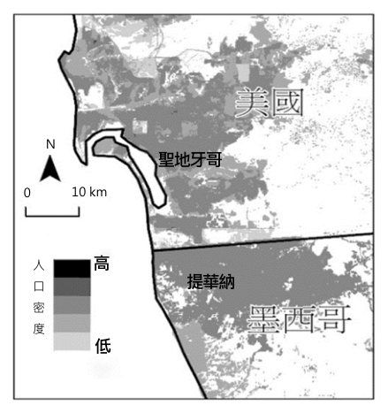
- （A）知識經濟發達
- （B）產業群聚普遍
- （C）經濟結構轉型
- （D）產品規格化普及
答案：（A）
詳解與考點
正解：題幹指出企業以資訊科技提供遠端客服或維運，並藉此降低營運成本；關鍵是遠端服務必須依賴數位技術與知識。A：知識經濟發達能提供資訊技術、專業知識與數位服務能力，正是遠端客服與維運有效運作所需的要素，故 A 為正解。
B：產業群聚強調企業或產業在特定地區的地理集中，與以資訊科技進行遠端服務的核心條件不同，B 錯誤。
C：經濟結構轉型是長期的整體變化，不能直接作為企業立即提供遠端客服與維運所需的條件，C 錯誤。
D：產品規格化有助於生產標準化，卻不是遠端客服與維運所必需的數位技術與知識基礎，D 錯誤。它看起來對，是因為規格化可提高作業效率，但題幹問的是遠端服務能否有效運作的關鍵配合。
本題考點：知識經濟——以資訊科技、專業知識與數位服務創造價值；要素配對判準——看到遠端客服或維運，優先連結數位技術與知識能力，而非地理集中或產品規格化。
第 58 題
文中提及有些企業在疫情影響下，產能調配受到的影響最為明顯。此現象的形成背景，適合以哪項概念說明？請在答題卷表格中勾選一項，並說明對應此概念的判斷依據。（3 分，30 字內）
本題選項為上圖中的 A／B／C／D，請對照圖片作答。
標準答案未收錄
詳解與考點
考點：全球分工與供應鏈。工廠據點分散、在海外疫情熱區設廠的企業，零組件須跨國運送，海運受阻致產能調配最受衝擊，此背景適用「國際分工／全球供應鏈」概念。判斷依據（30字內）：企業海外設生產據點、零組件跨國配送，海運耽誤使產能調配受阻。
第 59 題
題文所述之築牆爭議導致某些聯邦政府部門停擺，其原因最可能與該國哪項政府體制的特性及運作有關？
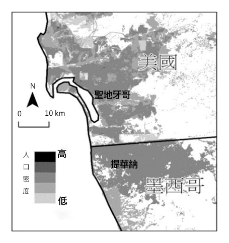
- （A）國會有權拒絕副署總統簽署的法案，阻礙法案公布和施行
- （B）國會對於涉及鄰國邊界的重要外交事務，依法擁有否決權
- （C）總統為國家最高行政首長，有權暫時停止政府部門的運作
- （D）總統與國會各自代表的兩權完全分立，易有政治對立僵局
答案：（D）
詳解與考點
正解：題幹關鍵在於總統與國會因預算案僵持，導致聯邦政府部分部門停擺；這正是美國總統制下行政、立法兩權分立且各自取得民主正當性時，可能形成的政治僵局。D：總統與國會各自代表的兩權完全分立，預算無法通過時便可能使部分政府部門停擺，故 D 為正解。
A：美國總統對國會法案可行使否決權，國會則可透過覆議程序推翻否決，並無「拒絕副署」制度，A 錯誤。
B：題文雖涉及邊界與外交，但政府停擺的直接原因是預算僵局，不是國會對外交事務具有一般否決權，B 錯誤。
C：總統不能片面決定停止政府部門運作；停擺是國會與總統未能就預算達成共識、經費無法支應所致，C 錯誤。它看起來對，是因為政府部門屬行政體系，容易誤以為總統可自行命令停擺。
本題考點：美國總統制與權力分立——行政、立法兩權各自獨立且互不從屬，預算案協商失敗時可能造成政治僵局與政府停擺；判斷停擺原因時，須區分「行政首長的職權」與「預算未獲國會通過」的制度結果。
第 60 題
4%人口居住在都市地區。其中與歐、北美兩洲都市化程度相當的某洲，其經濟發展程度卻無歐、北美兩洲高。造成此現象的主要原因，最可能為下列何者？表4 都市化程度（%）
本題選項為上圖中的 A／B／C／D，請對照圖片作答。
標準答案未收錄
詳解與考點
考點：開發中地區的「過度都市化／假性都市化」。本題可見題幹（雖經 OCR 殘缺）問的是「表4」中某洲都市化程度與歐洲、北美相當，但經濟發展程度卻較低的原因，所指即中南美洲（拉丁美洲）。其成因並非工業化帶動的都市化，而是鄉村地區土地分配不均、農業凋敝與貧窮，把大量人口「推」向都市；都市本身缺乏足夠的工業與就業吸納，形成都市化率高、卻伴隨大量非正式部門與貧民窟、經濟發展落後的「過度都市化（假性都市化）」現象。作答應扣住「鄉村推力造成人口大量湧入都市，但缺乏對應的工業化與就業機會」這一主因。注意：本題所附 figure_abs 為「圖11（美墨邊界聖地牙哥—提華納雙子都會人口密度圖）」，與本題（表4 各區域都市化程度）並不相符，係資料整理時圖文錯置；圖11 實屬同題組第 59 題（美國總統制／權力分立）所用之附圖，作答本題時不應依據圖11 的跨界都會關係，而應回歸表4 與題幹所述的都市化—經濟落差判讀。本題為單選，官方答案為對應「中南美洲鄉村貧窮推力導致過度都市化」的選項（原始紀錄因 OCR 殘缺未保留完整選項與標準答案字母，作答時請以該方向之選項為準）。
第 61 題
當今哪項原住民族議題，和臺灣總督府推動的原住民族集團移住計畫關係最密切？
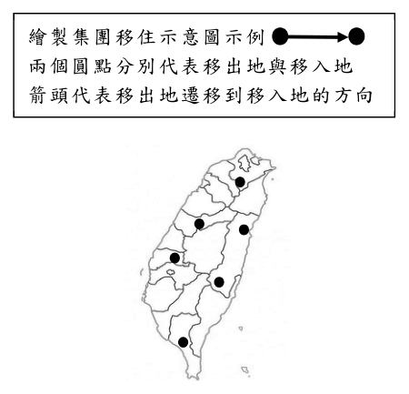
- （A）傳統領域的劃設
- （B）傳統姓名的回復
- （C）正名運動的展開
- （D）族語復振的推展
答案：（A）
詳解與考點
正解：題幹關鍵在於總督府強制原住民族離開原居地並重組部落，直接改變各族群與土地的歷史連結。A 的傳統領域劃設必須回溯實際居住、利用與傳承的範圍，最受集團移住造成的空間遷離與混居影響，故 A 為正解。
B：傳統姓名回復主要涉及個人與族群身分名稱，並非原居地被迫遷離的直接問題，錯誤。
C：正名運動關注族群名稱與主體性，和傳統生活空間遭改置的關聯較不直接，錯誤。
D：族語復振關注語言保存與使用，題幹則聚焦土地、部落位置及族群領域，錯誤。
本題考點：原住民族集團移住——強制遷離會切斷部落與原居地的連結並造成混居；議題對應判準——題幹若強調居住空間、土地利用與歷史範圍，優先連結傳統領域劃設。
第 62 題
題文所述總督府的支配控制及治理措施，有些仍影響至今，包括現行有關原住民族權益的相關法制；但也有些已經因應國際人權觀念趨勢、多元文化發展而有所改變。下列政策何者最能凸顯這樣的改變？
- （A）國家為國有林地所有權人，原住民得由政府機構許可取用森林資源
- （B）將原住民立法委員的選舉，分為「山地」與「平地」原住民選舉區
- （C）設立原住民保留地以保障原住民生計，並限制將土地轉予非原住民
- （D）設有部落會議的原住民族部落，經核定後可取得公法人的主體地位
答案：（D）
詳解與考點
正解：題幹對照日治時期否定原住民族傳統權益、拆解部落關係，關鍵是問何種現行政策最能顯示轉向承認集體主體性。D：設有部落會議的原住民族部落經核定後可取得公法人主體地位，承認部落的集體決策與法人資格，最能凸顯人權與多元文化觀念下的改變，故 D 為正解。
A：國有林地仍由國家作為所有權人，原住民取用資源仍須政府機構許可，未能凸顯部落自主的集體主體地位，A 錯誤。
B：「山地」與「平地」原住民選舉區的分類是既有選制安排，並非最直接回應題幹所述部落關係與集體權利的轉變，B 錯誤。
C：原住民保留地雖保障生計，但保留地制度沿自日治時期，且著重土地限制，未如公法人制度直接承認部落的集體主體性，C 錯誤。
本題考點：原住民族權益——比較政策時，先看是否由國家單向管理轉為承認部落集體決策與主體地位；公法人判準——部落經核定取得公法人資格，表示其具有獨立的公法上主體性；制度沿革判讀——保留地或行政分類不必然等於對集體自治的承認。
第 63 題
總督府推行集團移住期待「可使原住民『舊來勢力關係中斷』」，就此來看，總督府推行集團移住的主要目的為何？請在答題卷表格中勾選一項，並說明判斷的理由。（3 分，50 字內）
本題選項為上圖中的 A／B／C／D，請對照圖片作答。
標準答案未收錄
詳解與考點
考集團移住的統治意圖。引文：總督府迫部落離開傳統領域並分割重組，切斷往來、瓦解內部社會關係，呼應「舊來勢力中斷」。故主要目的是瓦解原住民既有聯繫與勢力以利統治控制。陷阱是只答經濟開發或同化，須扣回社會控制面。
第 64 題
請在答題卷作答區繪出一組「連接線」與繪製集團移住示意圖示例「箭頭」來代表從移出地地點遷移到移入兩個圓點分別代表移出地與移入地地地點，以作為文中說明「集團移住造成箭頭代表移出地遷移到移入地的方向賽德克族、太魯閣族與布農族混居情況」的輔助地圖。（3 分）
本題選項為上圖中的 A／B／C／D，請對照圖片作答。
標準答案未收錄
詳解與考點
繪圖題，考集團移住的空間表達。太魯閣族自立霧溪上游被遷往山腳，部落遭分割並嵌入布農族領域而三族混居。作答以圓點標移出地與移入地，箭頭由內山指向山腳混居區。陷阱是箭頭畫反或漏標混居關係。
第 65 題
文中所敘述之事件，乃發生於羅馬人統治的時代。時至今日，若以法治國家理念檢視此案，可看出題文中羅馬法律保障羅馬公民的規定，與下列何種近代法律重要原則的精神最為接近？
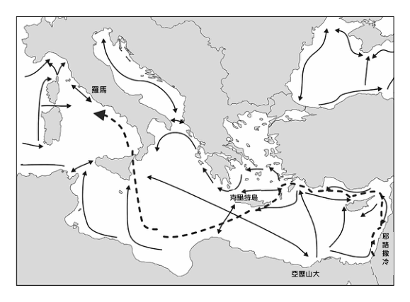
- （A）自由心證原則
- （B）公開審理原則
- （C）無罪推定原則
- （D）偵查不公開原則
答案：（C）
詳解與考點
正解：題幹的「非經審判，公民不得監禁鞭打」要求在定罪與處罰前先經正當程序，觸發無罪推定原則。C：保羅即使尚未證明清白，仍不得未審先受監禁、鞭打，最接近定罪前推定無罪，故 C 為正解。
A：自由心證是法官依證據與論理形成心證的證據評價原則，題文重點不是法官如何評價證據，A 錯誤。
B：公開審理著重審判是否向公眾開放；題文只強調不得未經審判即處罰，未涉及公開與否，B 錯誤。
D：偵查不公開規範偵查階段資訊不得任意公開，與公民未經審判不得受處罰無關，D 錯誤。
本題考點：無罪推定原則——在法院依法判決有罪前，人民應視為無罪；辨析程序原則時，看到「未經審判不得處罰」即選保障定罪前地位的無罪推定，而非公開審理、偵查不公開或自由心證。
第 66 題
保羅從耶路撒冷被押解去羅馬的航程中，前期與一般貿易航線類似，沿著陸地前行，利用地形來減輕航行的障礙。若從行星風系的大氣環流角度，押解保羅的航程沿陸地前行，最可能是為了避開哪一行星風帶或氣壓帶的影響？
- （A）東北信風帶
- （B）極圈氣旋帶
- （C）盛行西風帶
- （D）副熱帶高壓帶
答案：（C）
詳解與考點
正解：題幹的關鍵是東地中海約在北緯 30 至 37 度，且押送保羅的航線沿小亞細亞南岸向西、刻意貼近陸地；由行星風系判斷，此緯度主要受盛行西風帶影響，向西航行會遭遇逆風，故 C 為正解。
A：東北信風帶主要分布於低緯度，約北緯 0 至 30 度，與東地中海北緯 30 至 37 度的位置不符。
B：極圈氣旋帶位於高緯度，約南北緯 60 度附近，和地中海航線無關。
D：副熱帶高壓帶以氣流下沉、風力較弱為特徵；題幹強調沿岸利用地形減輕航行障礙，較能解釋為避開向西航行時的盛行西風。它看起來對，是因為北緯 30 度附近接近副熱帶高壓帶邊緣，但航線所經的主要緯度仍落在盛行西風帶。
本題考點：行星風系緯度判讀——北緯 30 至 60 度主要為盛行西風帶，北緯 0 至 30 度為東北信風帶；航向與風向——中緯度向西航行遇盛行西風較不利，可沿岸借地形減弱逆風影響；氣壓帶辨識——副熱帶高壓帶在約南北緯 30 度，極圈氣旋帶在約南北緯 60 度。
第 67 題
請問猶太教與基督教的信仰屬性分別是「一神信仰」或「多神信仰」？以及此二宗教對「神的選民」之看法分別為何？請在答題卷表格中作答。（3 分）
本題選項為上圖中的 A／B／C／D，請對照圖片作答。
標準答案未收錄
詳解與考點
考猶太教與基督教比較。二者皆屬一神信仰。選民觀差異：猶太教認選民僅限與神立約的猶太民族；基督教主張凡信耶穌者皆可成選民，普世開放不限族裔。陷阱是誤判其一為多神，或把基督教選民也限縮為單一民族。
其他年度
回到學科能力測驗社會的年度總覽，
或到學科能力測驗題庫首頁看其他科目。
題目與標準答案出自大考中心 學測歷年試題（依著作權法 §9，考試試題不受著作權保護）。依中華民國《著作權法》第 9 條第 1 項第 5 款，
依法令舉行之各類考試試題不得為著作權之標的，得自由利用。詳解為 AI 整理的學習輔助，
並非官方標準答案；中華民國會修訂，引用前請對照現行版本查證。